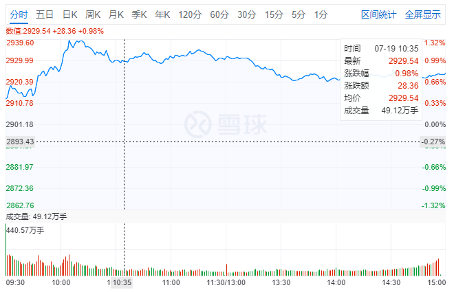
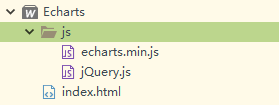
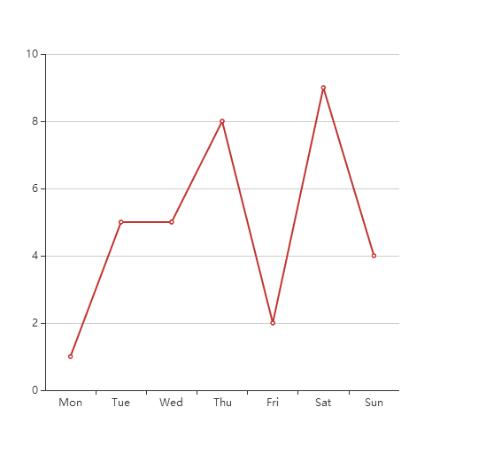
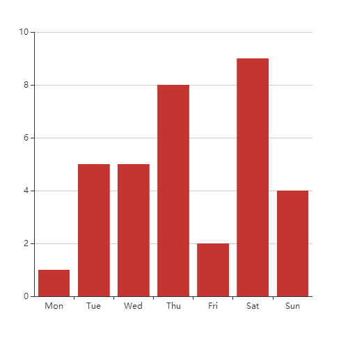
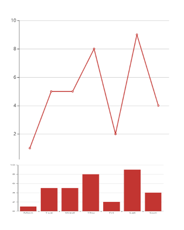

第一次写技术博客，有不足的地方希望大家指证出来，我再加以改正，谢谢大家。
之前一直没有找到一个合适的分时图项目，所以决定自己动手撸一个。接触的图表框架不多，在网上看到不少人推荐使用echarts，看了一下，很不错，例子多，文档也全，简单的过了一下配置项，感觉可以，就选择了使用echarts来实现。
这是雪球的分时图效果，接下来我将用几篇文章来讲解如何使用echarts来实现以下效果图。

一．分时图的组成
1．仔细看分时图的话，会发现其实分时图是由折线图跟柱状图来组成的。上方的折线图中，左边的数值是价格区间的刻度值，价格区间会有一个中间值，就是基准值（昨日收盘价），在基准值的上方表示上涨多少块，在基准值下方表示下跌多少块，右边的百分比则是表示上涨下跌的百分比。
2．下方柱状图则比较简单，就是单纯的柱状图，颜色再分成红绿色即可。
二．Echarts的使用
(1) 创建项目
(2) 新建js文件夹，找到解压的文件夹中的dist文件夹，把echarts.js或者echarts.mim.js复制出来使用。
(3) 新建index.html文件，并引用echart.min.js
项目简单结构

(4) 创建一个简单的折线图
<!DOCTYPE html>
<html>
<head>
<meta charset="UTF-8">
<title>分时图</title>
<script type="text/javascript" src="js/echarts.min.js" ></script>
<style>
#charts{
/*折线图的宽度*/
width:500px;
/*折线图的高度*/
height:500px;
}
</style>
</head>
<body>
<div id="charts">
</div>
<script type="text/javascript">
// 初始化一个echarts的对象
var chart = echarts.init(document.getElementById('charts'));
// echarts折线图的配置项
var option = {
// x轴配置
xAxis: {
type: 'category',
// x轴显示的数据
data: ['Mon', 'Tue', 'Wed', 'Thu', 'Fri', 'Sat', 'Sun']
},
// y轴配置
yAxis: {
type: 'value'
},
series: [{
data: [1, 5, 5, 8, 2, 9, 4],
// line类型是折线图，bar类型是柱状图
type: 'line'
}]
};
chart.setOption(option);
</script>
</body>
</html>效果图

(5)创建一个简单的柱状图，把之前代码的type:'line'，修改为type:'bar'即可
<!DOCTYPE html>
<html>
<head>
<meta charset="UTF-8">
<title>分时图</title>
<script type="text/javascript" src="js/echarts.min.js" ></script>
<style>
#charts{
/*折线图的宽度*/
width:500px;
/*折线图的高度*/
height:500px;
}
</style>
</head>
<body>
<div id="charts">
</div>
<script type="text/javascript">
// 初始化一个echarts的对象
var chart = echarts.init(document.getElementById('charts'));
// echarts折线图的配置项
var option = {
// x轴配置
xAxis: {
type: 'category',
// x轴显示的数据
data: ['Mon', 'Tue', 'Wed', 'Thu', 'Fri', 'Sat', 'Sun']
},
// y轴配置
yAxis: {
type: 'value'
},
series: [{
data: [1, 5, 5, 8, 2, 9, 4],
// line类型是折线图，bar类型是柱状图
type: 'bar'
}]
};
chart.setOption(option);
</script>
</body>
</html>效果图

(6)把两个图表图片经过合并后，分时图已经有了最初的样子，下一章将进行图表的整合。
